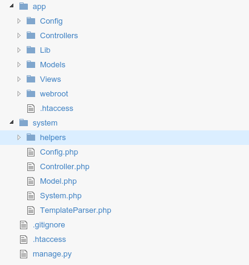
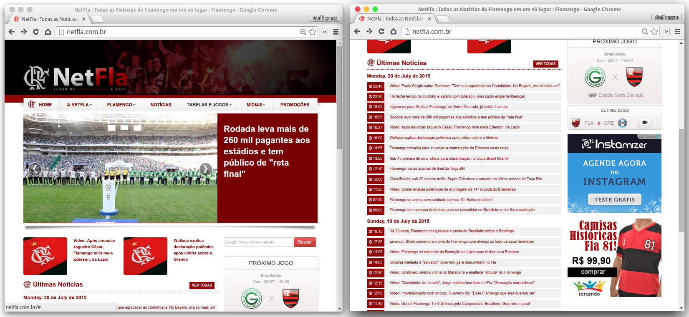
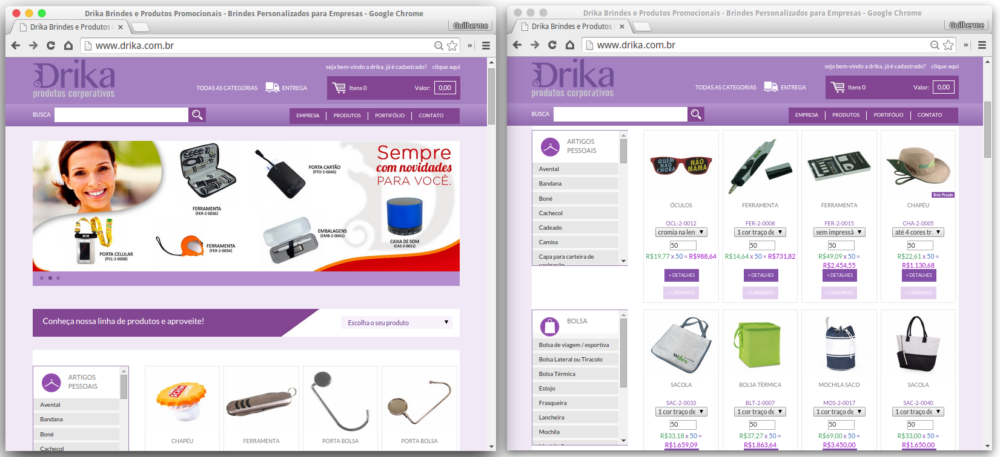

Desenvolvimento do
Framework Lothus{PHP}
Guilherme Peixoto da Costa Louro
Orientadora:
Maria do Carmo Facó
Faculdade de Educação Tecnológica do Estado do Rio de Janeiro Faeterj/Petrópolis
Introdução
Lothus{PHP}
- É um Framework feito em PHP
- Orientado a Objeto.
- Utiliza o MVC como padrão de projetos.
- Totalmente opensource
- Hospedado no github
O que é um Framework?
O que é um Framework?
O Framework é, como princípio básico, uma arquitetura "padrão" que tem como objetivo fornecer ferramentas comuns a todo tipo de projeto, utilizando os mais variados tipos de Design Pattern (Padrões de Projeto) a fim de proporcionar um ambiente de desenvolvimento extremamente produtivo.
A importância de usar um Framework
A importância de usar um Framework
Devido à grande necessidade de entregar projetos de grande porte e com prazos consideravelmente baixos, novas formas para um desenvolvimento mais ágil são buscadas. A utilização de um Framework para o processo de produção veio com o intuito de resolver esse problema.
Vantagens e Desvantagens
Vantagens e desvantagens
Vantagens:
- Padronização em projetos
- Velocidade no desenvolvimento
- Qualidade
- Re-uso de código
- Segurança
- Fácil manutenção
- Utilitários e Bibliotecas
Desvantagens:
- Performance e peso do projeto
- Curva de aprendizado
- Conhecimento técnico
Descrição da ferramenta
projeto de código aberto mantido por uma comunidade bastante ativa de desenvolvedores PHP. Utiliza o padrão de projeto MVC(Model-View-Controller) e ORM(Object-relational mappring), que são suas tabelas no banco de dados convertidas em Classes.
Principais características
- Ativo e com comunidade amigável
- Compatível com PHP5
- Geração de CRUD (Create, Read, Update and Delete, ou Criar, Ler, Atualizar e Excluir)
- Funciona em qualquer subdiretório web, com poucas configurações no apache
- Utiliza templates
Se ja existem Frameworks prontos...
Porque reinventar a roda?
- Diminuir a curva de aprendizado
- Filtrar apenas o necessário
- Adaptar a nossas necessidades
- Domínio total da ferramenta
Primeiro passo.
Definir as ferramentas.
Definição das ferramentas
Linguagem PHP.
É uma linguagem de script open source de uso geral, muito utilizada, e especialmente adequada para o desenvolvimento web e que pode ser embutida dentro do HTML.
Programação Orientada a Objetos.
É um padrão de desenvolvimento onde se implementa conjuntos de classes que definem objetos, comportamento (através dos métodos) e estados possíves (através dos atributos)
Programação Orientada a Objeto

(Diagrama de herança)
-
MVC (Model, View e Controller)
Padrão de projetos utilizado para separar as camadas de modelo, visão e controle no desenvolvimento de um sistema.
Model (Modelo)
View (Visão)
Controller (Controle)
Banco de dados Mysql.
É um gerenciador de banco de dados relacional e de código aberto, capaz de atender às necessidades dos mais variados tipos de usuários.
PDO (PHP Data Objects)
Módulo PHP responsável por fazer a conexão e integração de dados entre o sistema e o banco de dados de forma mais segura.
-
Controle de versão: Git
É um sistema de controle de versão distribuído e open source que registra as mudanças feitas em um ou mais arquivos de forma que você possa recuperar versões específicas.
-
Github
Repositório online que utiliza o Git como controle de versão.
Construção do Framework
Contrução do Framework
- "Separar" a aplicação do sistema do framework
- Definir a estrutura padrão para os arquivos e pastas.
Estrutura de pastas.
Escopo global
-
.gitignore
Responsável por guardar, todos os arquivos ou pastas ignorados pelo versionamento do projeto no git.
-
.htaccess
Arquivo responsável por criar a rota inicial do projeto.
System
System
É o motor do framework, onde ficam todas as classes responsáveis pelo funcionamento do projeto.

helpers
São classes que auxiliam o desenvolvedor no andamento do projeto, podendo ou não ser utilizadas em determinadas aplicações.
Para ser identificada como um Helper a classe precisar seguir um padrão.
Exemplo: Para uma classe helper de Email a mesma precisa se nomeada como EmailHelper.
App
App

Views
Para cada controller é criado uma pasta dentro da pasta View.
Para um controller exemplo, é criada a pasta app/View/Exemplo.
Esta pasta guarda todas as views para esse controller.
As Views possuem extensão .phtml, como os arquivos de template.
Lib
Tem a função de agrupar classes ou bibliotecas específicas para determinado projeto. O acesso a essas classes fica facilitado com a utilização de uma constantes do framework denominada LIB.
Webroot
É a pasta que passa a ser a raiz do projeto pelo servidor.
CSS - JS - IMG
Começando um novo projeto com o framework.
Baixar o arquivo zip em:
https://github.com/guilouro/Lothus-PHP/archive/master.zipPlus:
https://github.com/guilouro/boilerplate-lothus-php.gitCasos de Uso
Casos de Uso
Site Institucional
Sistema de gestão

Portal de notícias
E-commerce
Conclusão
Conclusão
O objetivo do trabalho foi desenvolver um Framework utilizando PHP e MVC, a fim de facilitar a criação de sites e sistemas
O framework atendeu às expectativas esperadas, uma vez que, sistemas e sites foram implementados de maneira eficaz, realizando o que a ferramenta se propõe a fazer.
Referências
Thiago Belem. Principais falhas de segurança no PHP. Disponível em: http://blog. thiagobelem.net/principais-falhas-de-seguranca-no-php/. Acesso em: 20 de Novembro. 2014.
-
PHP. Documentação PHP (Security). Disponível em: http://php.net/manual/en/security.php. Acesso em: 05 Dezembro. 2015.
-
CakePHP. Documentação CakePHP Cookbook 2.x. Disponível em: http://book.cakephp.org/2.0/pt/index.html. Acesso em: 02 Fev. Maio. 2015.
-
Linha de Código. CRUD com JSP. Disponível em: http://www.linhadecodigo.com.br/artigo/2997/crud-com-jsp.aspx. Acesso em: 25 Abril. 2015.
-
Node BR. Aplicações web real-time com Node.js. Disponível em: http://nodebr.com/. Acesso em: 26 Abril. 2015.
Referências
-
Gerencie você mesmo. Rsync: Para que serve e como usar. Disponível em: http://gerencievocemesmo.com.br/site/?p=508. Acesso em: 29 Abril. 2015.
-
Viva o Linux. Transferindo arquivos com o rsync. Disponível em: http://www.vivaolinux.com.br/artigo/Transferindo-arquivos-com-o-rsync. Acesso em: 29 Abril. 2015.
-
Git Scm. Git Book. Disponível em: http://git-scm.com/book/pt-br/v1. Acesso em: 03 Maio. 2015.
-
Locaweb. PDO - PHP Data Object. Disponível em: http://wiki.locaweb.com/pt-br/PDO_-_PHP_Data_Object. Acesso em: 08 Maio. 2015.
-
PHP. Documentação PHP. Disponível em: http://php.net. Acesso em: 15 Maio. 2015.